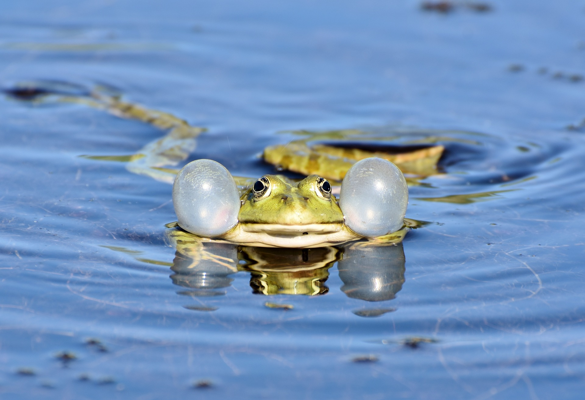

Allotment Diary 5/25
May 25th, 2023
{kind=link}
{kind=link}
{kind=link}
The radishes have grown! I have tasted them, they are very fresh and some of them are quite "spicy". This is the first time I have ever grown something by myself! To be honest, I didn't know when to harvest them, or whether they are harvestable. Everything in the allotment have been growing larger, except for the tomato and strawberry, they seem to be of the same size as last time. The strawberry stems have turned red. I wonder if that is a problem , but google says strawberries naturally have a red pigment in them, so there is nothing to worry about. I have also moved the squash to the allotment. The bottom leaves of the squash has turned yellow, and its roots have been growing out from the bottom of the pot, so it was time...
The green house is much better now than before. There are definitel still some bugs on the plants, but it doesn't feel as crazy as last time. I wasn't there for the session where they sprayed soap water on the plants, but whatever they did it seemed to work quite well. When I took out the squash, there were still bugs on the bottom leaves. I blasted it with water and washed off all the bugs before planting it into my allotment.
Allotment Diary 5/10
May 10th, 2023
{kind=link}
{kind=link}
It hasn't been long since the last update, but everything has been growing quite fast. This must been the magic of spring! I didn't expect that the broad beans would grow so fast, but it might be because I have started them at home in a wet tissue paper before sowing them. The garlics have also grown a lot since last time. Recently coop have been selling tomato and strawberry seedlings, so I have bought one of each and added them to my allotment. I have heard that tomatoes are harder to grow because they don't like to be around other plants, but I will give it a try! I have seen there are a lot of strawberries growing in other people's allotments, they seem to grow pretty nice and strong, so hopefully my strawberry will be well.
The green house has been under an aphid attack!!! Most of the plants there have been covered by bugs, including my cabbages and squash. I have emailed the gardening society and they arranged a sunday session to spary the plants with soap water, hopefully that will work. My brother's sunflower never grew, so I flipped around the soil aand found that the seed was gone. It must have fallen prey to the mouse gang that has been digging and eating seeds from the green house. I have started another seed for him, hopefully this time it will grow before being eaten.
Allotment Diary 4/30
Apr 30, 2023


Here is a picture of my allotment at the moment. Not long has passed since I sowed the seeds. We sowed the seeds in the green house on 14th of April, and sowed the seeds in the allotment on 15th of April. The Allotment contains three lines of crops, the radishes are sowed on the left. It can be seen on the picture that they seem to be the only ones that has sprouted! The middle contains spring onions, and the right contains garlics. I was worried that garlic and spring onions are eaten by birds, so I dug around trying to find them and found that they are still there. They have been growing roots (Just haven't sprouted yet). I guess you can't be impatient with the crops. We have newly sowed some broadbeans on the top and bottom of the allotment.
The other two pictures are of the crops I have sowed in the green house. They are cabbages and squash. My brother also sowed some flowers in the green house, but they haven't grown yet. The squash grew much faster than I expected, it was such a nice surprise. Something interesting that I discovered is that the cabbage sprouts look very similar to radish sprouts. They both have two leaves that shape like a small heart. It got me thinking that perhaps they are related in some ways, and so I google and found that they do in fact both belong to the Brassicaceae family! This family also includes broccoli, bok choi, and kale. It's quite interesting to think that they can look so similar as babies and yet grow into vastly different plants. Just like how human embryos look similar to those of chicken's, and yet we grow into such different creatrues!
My first blog
Apr 30, 2023
I saw a lot of cool people have their personal websites so I wanted to make one myself. I'm actually pretty bad at writing (and website making) so starting a blog could be good practice! Also recently I have gotten an allotment and have been planting some stuff. It would be fun to keep an allotment diary to track the growths of my plants. Other than that maybe I will also write about travels here. I guess it's just fun to have a place to post whatever is on your mind. That said, I am already unsure what else to write in my first blog. The website is pretty bland and ugly at the moment, but I am thinking maybe I should add tabs for different kind of things.
About Me
I am a frog